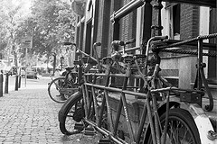

Venue and Travel

|
Amsterdam, the capital of the Netherlands, has been a renowned cultural, scientific and commercial centre for many centuries. It was here, in 1880, that VU University Amsterdam first opened its doors to students. VU stands for 'Vrije Universiteit' which means 'Free University'. Here, 'free' refers to freedom from state and church interference. VU University Amsterdam was established in 1880 by orthodox protestants. Nowadays it aims to be inspiring, innovative and involved. Throughout the past century, the university has continued to expand. It now comprises twelve faculties and has teaching facilities for 19,000 students. Please consult the VU campus map to check the conference and workshop locations. The places of interest are marked with the letters D, L, and T. |
|  |
Amsterdam is the city of bicycles! As soon as you set foot in the Dutch capital, there's no escaping them. And why would you want to? Cycling is the perfect way to get around such charming and compact city. Amsterdam is virtually unique in having all the advantages of a big city - culture, history, good food, entertainment and extensive public transport - but with relatively few of the drawbacks. The city is small, there are plenty of quiet spots where you can kick back and relax and, thanks to its canals, it has relatively little traffic. Yet, it still has plenty to offer! Information on many aspects of Amsterdam, from its history and its tourist attractions to the workings of the city council can be found on www.iamsterdam.com. |
How do I travel to and from Amsterdam?
- Arriving by plane
The Netherlands' largest and busiest airport is Schiphol Amsterdam International Airport. It is only 8 minutes by train from Amsterdam Zuid railway station, which is within walking distance from VU University Amsterdam. - By car
Directions on how to reach VU University Amsterdam.
Parking: There is a limited amount of parking space around VU University Amsterdam. Parking bays are located on De Boelelaan and Van der Boechorststraat streets. A daily ticket costs 12 Eur. - By train
Amsterdam Zuid railway station is within walking distance from the university. You can plan your trip with the help of the Dutch Railways website.
How to get to VU University Amsterdam by public transport?
- From Central Station
- metro tram 51, direction Amstelveen Westwijk (16 minutes), stop: De Boelelaan/VU
- tram 5, direction Amstelveen Binnenhof (25 minutes), stop: De Boelelaan/VU
- From Amsterdam Zuid Station
- metro tram 51, direction Amstelveen Westwijk (1 minute), stop: De Boelelaan/VU
- tram 5, direction Amstelveen Binnenhof (1 minute), stop: De Boelelaan/VU
- it's a 10 minute walk
General Credits - Stefano Ortolani | Background banner photo - Joan Campderros-i-Canas